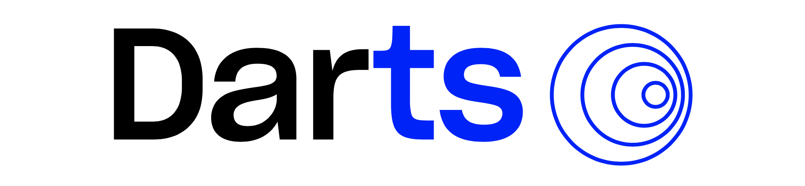
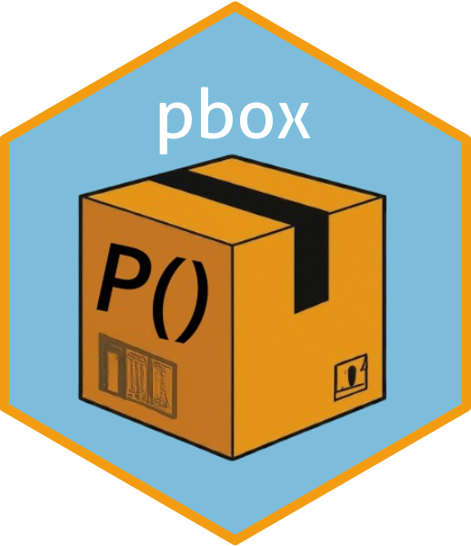
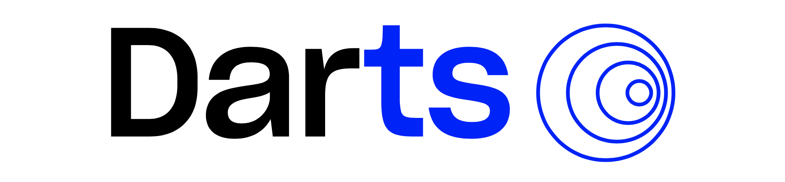
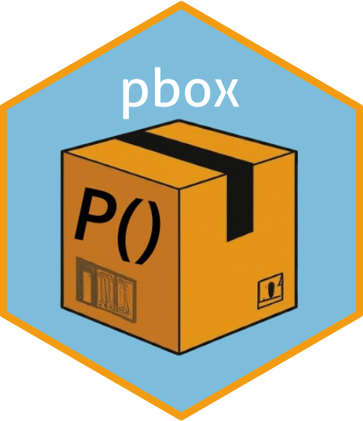

Ahmed T. Hammad
Hello, my name is Ahmed, and I am a Data Scientist, Quantitative Researcher, and Lecturer. I hold a PhD in Causal Machine Learning and over 10 years of experience working with data in both academia and the private sector. I possess extensive knowledge of programming languages such as R and Python, which I use daily to conduct my research and analysis.
As a passionate learner, I always strive to stay up-to-date with the latest developments in Machine Learning. That’s why I’m still involved in research and regularly publish my analysis on a variety of topics, including Machine Learning and Econometrics applied to environmental analysis and other fields.
In the last few years, I have been focusing mainly on Environmental Data Modeling, Climate Change and Extreme Event Analysis with a strong emphasis on probabilistic models to assist both private and public sector organizations.
One of the most fulfilling aspects of my career is sharing my knowledge of statistics and machine learning with others. Teaching the younger generation and professionals how to “get things done” and handle real-world data problems is something that brings me so much joy. It’s an opportunity for me to share my years of experience in the field and help others succeed.
My fields of interest
- Machine Learning
- Econometrics
- Extreme Events Analysis
- Causal Inference
- Time Series
- Probabilistic Models
- Environmental Analysis
- Sensor & Satellite Data
Languages and Tools


 
For curious visitors, the name of the website is just a tentative to mix the initial letter of my full name and statistics. By chance, I ended up with something that has an actual meaning in Arabic ü§∑. Athsas (ÿ£ÿ™ÿ≠ÿ≥ÿ≥) means ‚Äúto feel something‚Äù or a sensation given by an object or material when touched.